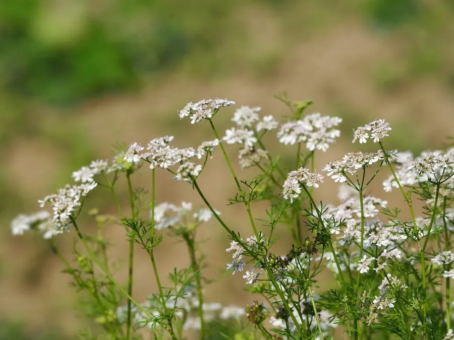

农作物与经济植物 · 植物界
芫荽 Coriandrum sativum

伞形科一年生草本，叶形多变、全株有特殊香气，嫩茎叶即香菜，果实即芫荽子，是世界最常用的香草之一。
- 分类
- 门被子植物门纲木兰纲目伞形目科伞形科属芫荽属
- 栖息环境
- 冷凉地区的菜园、田边，喜光、耐寒、忌高温
- 地理分布
- 原产地中海东部与西亚，中国各地栽培，世界温带至热带广泛种植
- 保护级别
- 暂无评估；栽培作物
物种志
芫荽为伞形科芫荽属一年生草本，株高 20–100 厘米，茎直立，中空，有细纵纹。基生叶一至二回羽状全裂，裂片宽卵形，形似芹菜叶；茎生叶羽状细裂，裂片线形，同一株上叶形差异明显。复伞形花序顶生，花小，白色或淡紫，花期 4–7 月；双悬果球形，直径 3–5 毫米，成熟后呈黄褐色，即芫荽子。
芫荽原产地中海东部与西亚，张骞通西域后传入中国，故又称“胡荽”。嫩茎叶是中式凉拌、汤面与拉美的莎莎酱中不可或缺的香草；果实（芫荽子）气味温和带柑橘香，是咖喱粉与腌渍香料的重要成分。栽培喜冷凉、阳光充足，适宜疏松肥沃土壤，春秋播种，生长期短、可分批播种。其特殊气味源于癸醛等醛类物质，不同人因嗅觉受体差异对其喜好两极分化。
形态与习性
- 原产地地中海东部与西亚
- 株高20–100 厘米，茎中空有纵纹
- 叶形基生叶宽裂，茎生叶细裂如丝
- 用途嫩叶作香菜，果实作咖喱与腌渍香料
- 栽培喜冷凉向阳，春秋分批播种
- 采收嫩株 40 天左右可收，果实转褐后割取
趣味知识
- 芫荽的叶和种子气味完全不同：叶是强烈的“香菜味”，种子却温和带柑橘香。
- 有人觉得香菜有肥皂味，这与嗅觉受体基因 OR6A2 的差异有关。
- 它由西域传入中国，所以古称“胡荽”，后来才叫香菜。
- 芫荽的茎生叶细裂如羽毛，与基生叶判若两株，常让初学者认错。